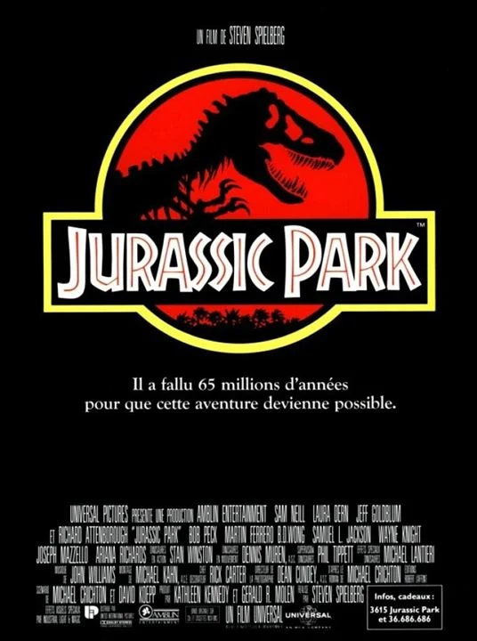

Jurassic Park foi aclamado como um marco na indústria de efeitos especiais, que foram produzidos pela Industrial Light & Magic (com efeitos criados através de computação gráfica) e pela Stan Winston Studios (com efeitos produzidos através de animatrônica). A reconstituição virtual dos dinossauros, para que "contracenassem" com os atores em carne e osso, levou a um estrondoso sucesso de bilheteria, o que apenas confirmou o fascínio que essas criaturas extintas exercem sobre a imaginação das pessoas.
Foi lançado nos Estados Unidos em 11 de junho de 1993, chegando no dia 25 do mesmo mês no Brasil. Em Portugal, a estreia ocorreu em 1 de outubro de 1993. Recebeu críticas geralmente favoráveis, destacando-se os efeitos visuais, a trilha sonora composta por John Williams e a direção de Spielberg, apesar de ressalvas à falta de desenvolvimento da história e personagens em oposição aos efeitos. Arrecadou mais de US$ 914 milhões mundialmente, tornando-se o filme de maior bilheteria da história até o lançamento de Titanic, em 1997. Atualmente, é a trigésima nona maior bilheteria de todos os tempos. O longa-metragem foi indicado a três estatuetas na 66.ª cerimônia do Oscar, vencendo nas categorias de Melhor Som, Melhor Edição de Som e Melhores Efeitos Visuais.
